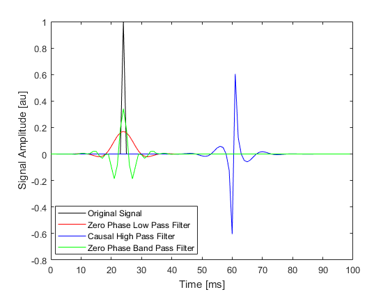
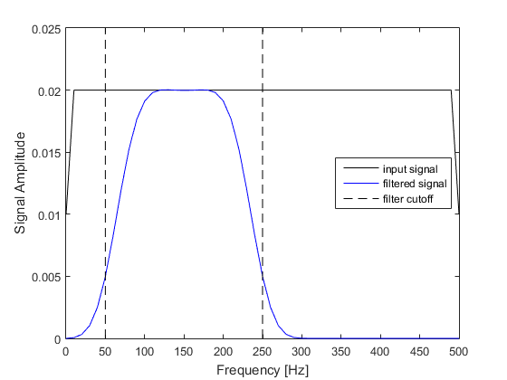

applyFilter
Filter input with high or low pass filter.
Syntax
filtered_signal = applyFilter(signal, Fs, cutoff_f, filter_type) filtered_signal = applyFilter(signal, Fs, cutoff_f, filter_type, ...)
Description
applyFilter filters an input signal using filter. The FIR filter coefficients are based on a Kaiser window with the specified cut-off frequency and filter type ('HighPass', 'LowPass' or 'BandPass'). Both causal and zero phase filters can be applied. An example of using applyFilter is given below.
% create a time series with a single monopolar pulse N = 100; dt = 1e-3; t = 0:dt:dt * (N-1); pulse = zeros(length(t), 1); pulse(25) = 1; % filter using applyFilter pulse_filtered_lp = applyFilter(pulse, 1/dt, 100, 'LowPass', 'Plot', true, 'ZeroPhase', true); pulse_filtered_hp = applyFilter(pulse, 1/dt, 100, 'HighPass', 'Plot', true); pulse_filtered_bp = applyFilter(pulse, 1/dt, [50, 250], 'BandPass', 'Plot', true, 'ZeroPhase', true); % plot the filtered time series figure; [~, scale, prefix] = scaleSI(max(t)); plot(t * scale, pulse, 'k-', ... t * scale, pulse_filtered_lp, 'r-', ... t * scale, pulse_filtered_hp, 'b-', ... t * scale, pulse_filtered_bp, 'g-'); xlabel(['Time [' prefix 's]']); ylabel('Signal Amplitude [au]'); legend('Original Signal', 'Zero Phase Low Pass Filter', 'Causal High Pass Filter', 'Zero Phase Band Pass Filter', 'Location', 'best'); 
Inputs
func |
signal to filter |
Fs |
sampling frequency [Hz] |
cutoff_f |
filter cutoff frequency/s [Hz] |
filter_type |
'HighPass', 'LowPass' or 'BandPass' |
Optional Inputs
Optional 'string', value pairs that may be used to modify the default computational settings.
| Input | Valid Settings | Default | Description |
|---|---|---|---|
'Plot' |
(Boolean scalar) | false |
Boolean controlling whether the amplitude spectrum is displayed before and after filtering. |
'StopBandAtten' |
(numeric scalar) | 60 |
Attenuation in decibels in the stop band. |
'TransitionWidth' |
(numeric scalar) | 0.1 |
Size of the transition based on the temporal sampling frequency. |
'ZeroPhase' |
(Boolean scalar) | false |
Boolean controlling whether a zero phase filter is used. |
Outputs
filtered_signal |
the filtered signal |
Examples
See Also
filter, filterTimeSeries